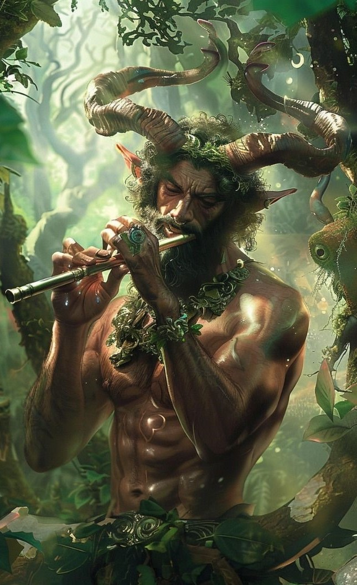
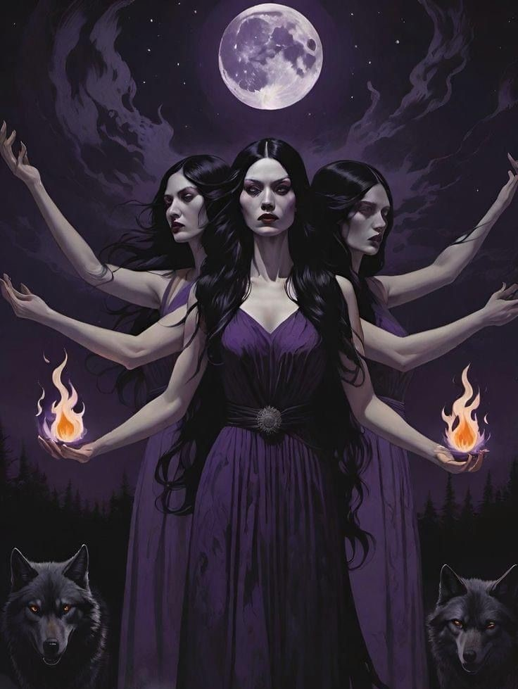

OLIMPO
Localizado no Monte Olimpo, a montanha mais alta da Grécia, o Olimpo é a morada dos deuses do panteão grego, conhecidos como deuses olimpianos, que governam diversos aspectos da natureza, do destino e da vida humana, sendo centrais nas crenças e mitos da Grécia Antiga.

Zeus
Zeus (Júpiter na Mitologia Romana), além de ser o rei dos deuses e o governante do Olimpo, é o deus dos relâmpagos e trovões e o senhor do céu. Ele é um dos deuses filhos diretos do titã cronos, juntamente com seus irmãos Poseidon, Hades, Hara (também sua esposa), Deméter e Héstia.

Hades
Hades (Plutão na Mitologia Romana) é o governante do submundo e o deus dos mortos. Embora ele seja um dos principais deuses e filho direto do titã Cronos, Hades não é um deus olimpiano e, logo, não mora no Olimpo. Um dos mitos mais conhecidos dele é o do rapto de sua sobrinha Perséfone, com quem se casou.

Deméter
Deméter (Ceres na Mitologia Romana) é a deusa grega da agricultura, da colheita e do solo fértil e a responsável pelas estações do ano, visto que, no mito do rapto de Perséfone, a filha passaria metade do ano com ela (primavera e verão) e a outra metade com Hades (outono e inverno).

Ares
Ares (Marte na Mitologia Romana), filho de Zeus e Hera, é o deus grego da guerra, mas, diferentemente da sua irmã Atena, ele é o deus da guerra sangrenta e da violência pura, relacionado mais a guerra bruta e caótica, sem se importar com estratégia. Ares também é conhecido por ser amante (não tão secreto) de Afrodite.

Hefesto
Hefesto (Vulcano na Mitologia Romana), filho de Zeus e Hera, é o deus grego da metalurgia, da forja e do artesanato. Seu nascimento é um pouco peculiar, visto que, quando nasceu, foi rejeitado por sua mãe e jogado de cima do Monte Olimpo, após um tempo, Hera pediu que ele voltasse quando ele criou um presente para ela. Contudo, ele só disse que voltava se ela o casasse com Afrodite, e, como ela é a deusa do casamento, assim ela fez.
Hermes
Hermes (Mercúrio na Mitologia Romana), filho de Zeus e da ninfa Maia, além de ser o mensageiro dos deuses, é o deus do comércio, das viagens e dos ladrões. Ele é muito associado à rapidez e a comunicação, visto que transita entre os mundos muito rápido e é sempre visto com um caduceu e sandálias aladas para conseguir voar.

Dionísio
Dionísio (Baco na Mitologia Romana) é o deus do vinho, das festas e do teatro. Contudo, seu nascimento é muito peculiar, visto que ele é filho de Zeus com uma mortal (Sêmele), mas ela morreu antes de dar a luz a Dionísio, fazendo com que Zeus o salvasse e o colocasse dentro de sua coxa até ele nascer. Assim, Dionísio pode ser considerado um semideus (filho de humano com um deus) que passou a ser um deus olimpiano de verdade.

Poseidon
Poseidon (Netuno na Mitologia Romana) é o deus grego dos mares, dos terremotos e, incrível e curiosamente, dos cavalos. Poseidon era muito temido pelos marinheiros devido ao seu temperamento instável, podendo trazer tempestades ou um mar calmo, por isso era sempre um dos principais alvos de oferendas.

Hera
Hera (Juno na Mitologia Romana), além de ser a rainha do Olimpo, é a deusa do casamento, da fertilidade e da proteção das mulheres. Hera é frequentemente retratada como uma figura vingativa, visto que seu esposo (Zeus) a traia diversas vezes e sempre as punia quando conseguia.

Atena
Atena (Minerva na Mitologia Romana) é a deusa da sabedoria e da estratégia em batalha. Filha de Zeus e da titã Métis, seu mito conta que Zeus engoliu a titã grávida por causa da profecia que recebera em que sua filha seria mais poderosa que ela. Contudo, Zeus sentia dor de cabeça e pediu para seu outro filho, Hefesto, abrir sua cabeça e de lá saiu Atena já adulta, armada e vestida com armadura brilhante.

Afrodite
Afrodite (Vênus na Mitologia Romana) é a deusa grega do amor, da beleza e da sensualidade. Sobre seu nascimento, há duas versões sobre: a de Hesíodo (em que ela nasceu da castração de Urano por parte de Cronos) e a de Homero (em que ela é filha de Zeus e da deusa Dione). Afrodite é conhecida por ser casada com Hefesto (mas, devido a sua falta de beleza, possui um caso com Ares - o qual é muito mais musculoso e bonito).

Ártemis
Ártemis (Diana na Mitologia Romana) é a deusa grega da caça, da lua e da virgindade. Filha de Zeus e da titã Leto e irmã gêmea de Apolo, ela é retratada com suas caçadoras (mulheres jovens que compartilham dos mesmos costumes e valores de Ártemis, bem como da caça e do mesmo voto de castidade).

Apolo
Apolo (também Apolo na Mitologia Romana), é o deus grego que traz a luz do dia, da música, da profecia, da caça e da cura. Filho de Zeus e da titã Leto e irmão gêmeo de Ártemis, o nascimento deles é um pouco caótica, visto que Hera descobriu da traição de Zeus e proibiu que nenhuma terra. Poseidon, compadecido com Leto, ergueu uma ilha onde não seguia as regras de Hera e ela poderia então dar a luz.
Linhagem Mitológica

Deuses Menores
Deuses que não possuem o mesmo nível de poder ou a mesma importância que os deuses olimpianos, mas que ainda desempenham papéis significativos em vários aspectos, como na ordem e funcionamento da natureza. Dentre as centenas (ou até mais) de deuses menores, existem:
-

Pã
Filho de Hermes com uma ninfa, Pã (Fauno na Mitologia Romana) é o deus dos bosques e da natureza selvagem. Ele é retratado como uma divindade meio humana e meio cabra com chifres e patas de cabra que protege o rebanho e os demais animais e seres vivos dos bosques.
-
Perséfone
Filha de Zeus e Deméter, Perséfone (Proserpina na Mitologia Romana) é a deusa da vegetação, flores e frutos e, após seu rapto para o submundo, se tornou esposa de Hades e, logo, a rainha do submundo, mas habitando metade do ano no Olimpo com sua mãe.
-
Morfeu
Filho do deus do sono Hipnos e da deusa da noite Nyx, Morfeu (Somno na Mitologia Romana) tem o poder de se conectar aos sonhos das pessoas. Assim, é por isso que vem o ditado “cair nos braços de Morfeu” quando a pessoa diz que vai dormir ou que está com muito sono.
-
Íris
Filha dos titãs Taumas e Electra, Íris (Arcus na Mitologia Romana) é a deusa do arco-íris e uma mensageira (assim como Hermes) entre os deuses e os mortais. Assim, por isso a origem do nome “arco-íris" (seu nome romano e grego, respectivamente).
-
Héstia
Filha de Cronos e Reia e irmã de Zeus, Poseidon, Hades, Hera e Deméter, Héstia (Vesta na Mitologia Romana) é a deusa do lar, da família e da harmonia doméstica. Antes de Dionísio, Héstia era uma das doze deusas olimpianas, mas cedeu seu lugar a Dionísio.
-

Hécate
Filha dos titãs Perses e Asteria, Hécate (Trivia na Mitologia Romana) é descrita como a deusa da magia e das encruzilhadas. Ela é retratada como uma deusa com três corpos ou rostos, indicando sua vigilância e domínio sobre os reinos do céu, da terra e do submundo.
-
Eros
Filho de Afrodite e Ares (ou uma divindade primordial sem pais em outras versões), Eros (Cupido na Mitologia Romana) é o deus do desejo sexual e da paixão súbita. Ele é caracterizado como um ser de asas que atira flechas com seu arco e espalhando amor e/ou repulsão.
-
Nêmesis
Filha do deus das trevas Érabo e da deusa da noite Nyx, Nêmesis (Invidia na Mitologia Romana) é a deusa da vingança e da justiça retributiva, de forma imparcial, contra aqueles que cometem excessos (especialmente o húbris - termo grego que indica arrogância).